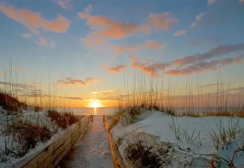

St. Joseph Peninsula State Park →
Explore the Gulf beach, coastal dunes, and bay-side scenery of St. Joseph Peninsula State Park. Check Florida State Parks for current access conditions before making the trip.
Photo · Florida State Parks